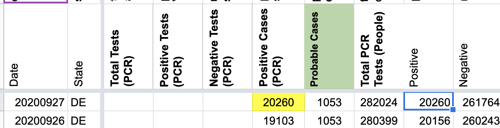
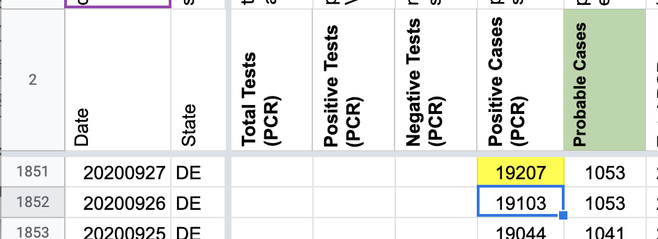
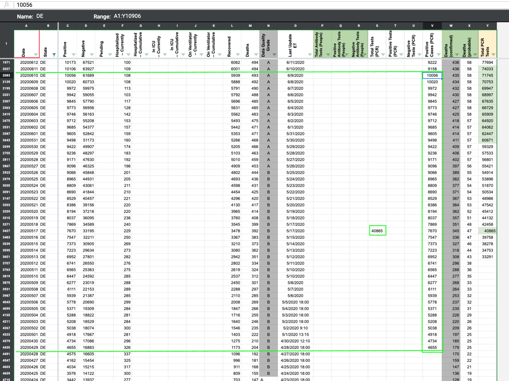
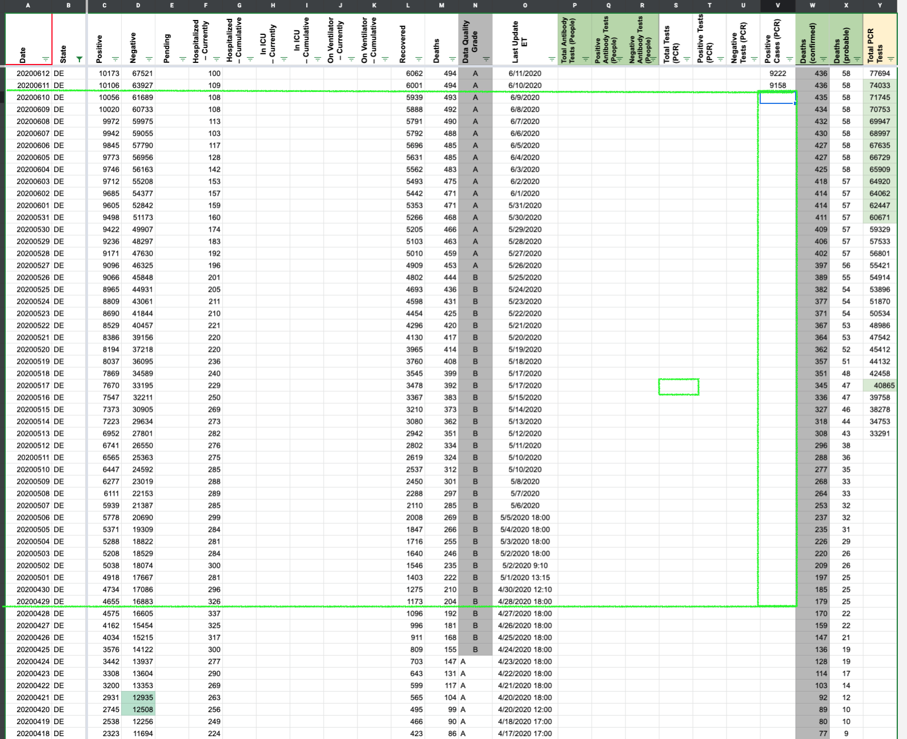
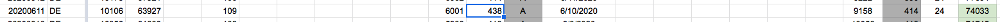
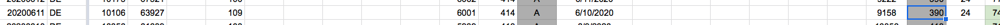
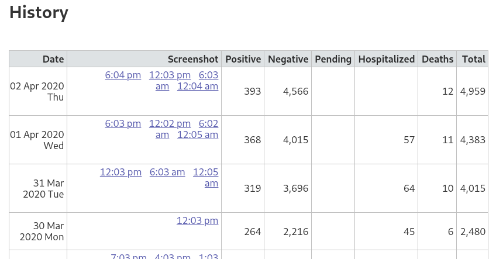

#1074: [DE] Remove values carried over after Delaware stopped reporting Recovered on 12/7/2020
Issue number 1074
jaclyde opened this issue on January 21, 2021, 3:05 PM PST
Labels Data quality
State: Delaware
Issue: On December 7, 2020, Delaware announced on their dashboard that they would no longer be reporting Recovered as it was “no longer a true reflection of the number of persons that recovered from the disease”. We carried over the last available value, as that was our policy at the time, however the value is out of date and potentially confusing, so we are removing the carried over value. We will be keeping the time series as provided by the state, but removing the carried over values from December 7, 2020, forward.
Comments
Values removed: Changes (1).txt
#1074: [DE] Remove values carried over after Delaware stopped reporting Recovered on 12/7/2020
Issue number 1074
jaclyde opened this issue on January 21, 2021, 3:05 PM PST
Labels Data quality
State: Delaware
Issue: On December 7, 2020, Delaware announced on their dashboard that they would no longer be reporting Recovered as it was “no longer a true reflection of the number of persons that recovered from the disease”. We carried over the last available value, as that was our policy at the time, however the value is out of date and potentially confusing, so we are removing the carried over value. We will be keeping the time series as provided by the state, but removing the carried over values from December 7, 2020, forward.
Comments
- [x] make GH issue
- [x] double check the metrics aren't being reported somewhere by the state
- [x] remove carried over values
- [x] null out source notes
- [x] null out WS2 values
- [x] update public note
no chart annotation added because we don't have a chart with this metric
Values removed: Changes (1).txt
#918: [DE] Backfill Test Encounters
Issue number 918
muamichali opened this issue on October 29, 2020, 2:05 PM PDT
Labels Data quality
State or US: Delaware
Describe the problem Filling the time series of test encounters and positive tests from public State provided data.
Link to data source https://myhealthycommunity.dhss.delaware.gov/locations/state/download_covid_19_data
Comments
We backfilled total test encounters and positive tests (PCR). Attached analysis sheet and data sheet that was downloaded from the data source on two separate days for comparison.
DE - Analysis PCR 20201028.csv.txt DE - DE data 10_19 and 10_28.csv.txt
#871: [DE] confirmed+probable cases entered as confirmed cases on 9/27
Issue number 871
karaschechtman opened this issue on September 27, 2020, 8:58 PM PDT
Labels Data quality
State or US: DE
Describe the problem Looks like we accidentally entered confirmed+probable as confirmed today. We have 20260; it should be 19207
Link to data source

Comments
Before  After 
#863: [DE] Backfill probable cases from 6/11-7/27 by using total - confirmed
Issue number 863
muamichali opened this issue on September 24, 2020, 9:28 AM PDT
Labels Data quality
State or US: Delaware
Describe the problem
Delaware started separating confirmed and probable cases on 6/11. CTP did not start capturing probable cases until 7/28. This will backfill the Probable Cases time series by a calculation of Positive - Positive Cases (PCR)
DE's calculated probables have a flat number from 6/30 to 7/11. We verified this was correct through screenshots.
Link to data source https://coronavirus.delaware.gov/ https://covid-tracking-project-data.s3.us-east-1.amazonaws.com/state_screenshots/DE/DE-20200630-183314.png https://covid-tracking-project-data.s3.us-east-1.amazonaws.com/state_screenshots/DE/DE-20200706-063510.png https://covid-tracking-project-data.s3.us-east-1.amazonaws.com/state_screenshots/DE/DE-20200711-180651.png
Comments
Before and After values in the attached sheet DE Probable Timeseries Backfill.xlsx
#622: [DE] PCL Cases Historical
Issue number 622
the-daniel-lin opened this issue on July 14, 2020, 7:17 AM PDT
Labels PCL/SVP Historicals
State or US: Delaware
Describe the problem From 4/28-6/9, we report confirmed+probable lumped values in "Positive Cases (PCR)." Delaware began separating the numbers on 6/10, which we have reflected in that same column. We should delete the lumped values prior to 6/10
Link to data source

Comments
From 2020-04-29 through 2020-06-10 (inclusive), CTP reported the same value for positive and positiveCasesViral columns.
- The positiveCasesViral column data has been removed for this date range. Please note, this reflects a total 337,159 removed from positiveCasesViral (over this 43 day timeframe)
- The positive column has been unaltered for this date range.
Separately, on 2020-06-11, Delaware reported 9,158 confirmed cases, 948 probable cases which is 10,106 total cases. This is reflected on 2020-06-11 in CTP's dataset.
{kind=link}
BEFORE 
AFTER 
#501: [Data Quality] Capture current values and fill in historicals for probable cases in DE spreadsheet
Issue number 501
muamichali opened this issue on June 19, 2020, 10:51 AM PDT
Labels Data quality Meta not stale
Target Date: 8/1 Overview: Start explicitly recording probable cases during daily data entry shifts and backfill historical values. Contribution to milestone: This issue will enable us to expose probable cases explicitly in the API/public spreadsheet, enabling better communication when we switch to confirmed+neg instead of pos+neg. Other benefits: better understanding of probables (whether they are indeed pos-confirmed) Potential challenges: We are hoping that the probables equal Positives (confirmed+probable) - Positive Cases (PCR) in all states, but if this is not the case we may need to do more digging. Editorial: None
- [x] Add an explicit Cases (Probable) column to worksheet2. Begin collecting it in daily DE shifts.
- [ ] Create a sanity checking spreadsheet that checks whether Positives (confirmed+probable) - Positive Cases (PCR) matches our recorded probables values
- [ ] Backfill probables by using the calculation or other backfill sources if needed. File GH issues for any complicated states.
Comments
#491: DE Death Total on 6/11 was entered incorrectly
Issue number 491
muamichali opened this issue on June 12, 2020, 4:10 PM PDT
Labels Data quality
DE
Describe the problem Data entry error
Link to data source https://covid-tracking.slack.com/archives/CUQ4MMTPD/p1591987123059900
Comments
Looks like they added probable deaths that day and the person entering misinterpreted, adding the probables to the total and then reporting the total as confirmed deaths. Fixed both numbers:
Before: 
After: 
#125: DE Data correction by state 3/31
Issue number 125
careeningspace opened this issue on April 2, 2020, 5:52 PM PDT
Labels Data quality
DE changed its data reporting on 3/31. News article documenting change: https://delawarebusinessnow.com/2020/03/coronavirus-cases-increase-to-264/
Data before:

Data After:

Comments
#117: DE cases 3/31-4/1
Issue number 117
OregonCarrot opened this issue on April 1, 2020, 4:30 PM PDT
Labels Data quality
The # of cases for Delaware dropped from 406 on 3/31 to 368 on 4/1.
Given that it reports positive tests, and not active cases, I don't know how this is possible.
Comments
Relates to #101
I believe this has already been addressed

Thank you
#101: DE: 31 March data does not match screenshots
Issue number 101
tomdottom opened this issue on April 1, 2020, 7:58 AM PDT
Daily positive listed as 406 whilst screenshots shows 264.
When I first noticed this last night (around 23:00) dashboard in question was actually showing 316.

316 aligns with latest reported figures

Comments
There is already an issue open for DE.
@una-smith #90 relates to the negative count and testing.
This issues refers to positive count and the conflicting information between screenshots, historical data for 31 March, and latest reported data.
:thinking: just looking at a public arcgis datasource and see
{'NAME': 'New Castle', 'Presumptive_Positive': 197}
{'NAME': 'Kent', 'Presumptive_Positive': 34}
{'NAME': 'Pea Patch', 'Presumptive_Positive': None}
{'NAME': 'Sussex', 'Presumptive_Positive': 88}
{'NAME': 'Reedy Island', 'Presumptive_Positive': None}
{'NAME': 'Statewide', 'Presumptive_Positive': 87}
Sum including Statewide is 406 (which matches history).
Sum excluding Statewide is 319 (which matches current reported count).
Was a similar (same?) data source used and Statewide not excluded?
Data on site now reflects expected value
#90: DE: Negatives fixed? Count updated but grade and state dash haven't
Issue number 90
catawbasam opened this issue on March 31, 2020, 4:46 AM PDT
Labels State grades stale
I have friends working to improve the Delaware situation, and want let them know whether the state has implemented regular reporting of negative test results.
This morning I see a higher negatives count for Delaware on covid19tracking, but the grade remains 'C' and I see no state-reported negative count at https://coronavirus.delaware.gov/
Could you clarify the situation?
Comments
Hi. The new negatives count follows a contact I made yesterday with the Delaware Department of Public Health Call Center. Here is the response I received from DPH Call Center:
Due to the number of private test being administered, we do not have an accurate count of those being tested until numbers are reported to DPH. This number is only reported once a week. We will pass your feedback along to the web team, however.
I would like to see the COVID19Tracking dashboard updated. A "B" grade seems appropriate and the comment mentioning no negatives since 3/13 should be updated.
Now 4/1 and DE has improved reporting of negative test counts but the COVIDTracking dashboard still says about DE
Last reported negative number is from 3/13 News Report.
Someone please remove that sentence!
We’re on it! It just changed last night, and we have to manually update grades and notes (for now).
Alexis
On Apr 1, 2020, at 6:54 AM, una-smith notifications@github.com wrote:
Now 4/1 and DE has improved reporting of negative test counts but the COVIDTracking dashboard still says about DE
Last reported negative number is from 3/13 News Report.
Someone please remove that sentence!
— You are receiving this because you are subscribed to this thread. Reply to this email directly, view it on GitHub, or unsubscribe.
This issue has been automatically marked as stale because it has not had recent activity. It will be closed if no further activity occurs. Thank you for your contributions!
This issue has been closed because it was stale for 15 days, and there was no further activity on it for 10 days. You can feel free to re-open it if the issue is important, and label it as "not stale."
no chart annotation added because we don't have a chart with this metric